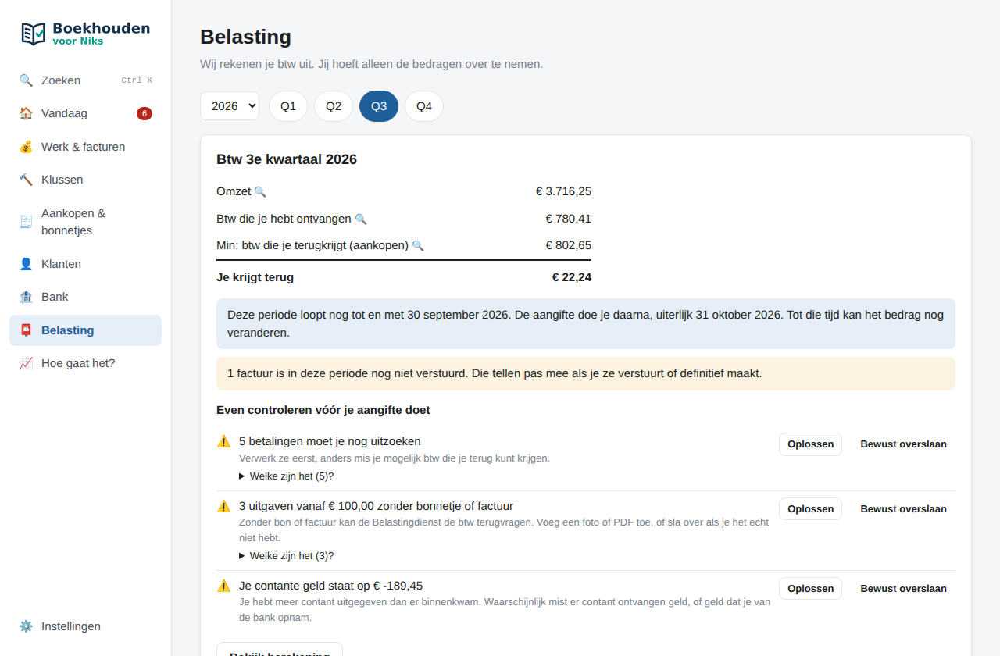

Btw-aangifte voor zzp'ers
Btw-aangifte zelf doen als zzp'er
BoekhoudenVoorNiks rekent je btw-aangifte uit en zegt in gewone taal wat je moet betalen of terugkrijgt, tot wanneer, en precies wat je in elke rubriek bij de Belastingdienst invult.
Zo werkt het
- Je werkt gewoon: facturen maken, bonnetjes erin, bank inlezen of automatisch laten ophalen. De btw wordt per regel bijgehouden.
- Kies het kwartaal bij Belasting. Je ziet je omzet, de btw die je ontving en de btw die je terugkrijgt.
- Controleer wat het programma vindt: betalingen die nog niet zijn uitgezocht, uitgaven zonder bon, een negatieve kas. Los het op, of sla het bewust over.
- Neem de bedragen over in Mijn Belastingdienst Zakelijk: per rubriek (1a, 1b, 1e, 2a, 3b, 4a, 4b, 5b) staat erbij wat je invult.
- Betaal op tijd: uiterlijk de laatste dag van de maand na het kwartaal. Het startscherm laat al die tijd zien hoeveel je apart moet houden.

Ook de lastige gevallen
- Btw verlegd
Als onderaannemer in de bouw, of bij diensten aan bedrijven in andere EU-landen. Het programma zet het in de juiste rubriek. - Kleineondernemersregeling (KOR)
Met de KOR reken je geen btw; btw op inkopen gaat dan naar de kosten. - Buitenland en de ICP-opgaaf
Goederen en diensten aan EU-bedrijven komen apart in de opgaaf intracommunautaire prestaties (ICP). - Een fout in een eerdere aangifte
Een correctie tot € 1.000 btw neem je mee in de volgende aangifte; daarboven zegt het programma dat je een suppletie doet.
Samenwerken met je boekhouder: de eerste 4 maanden gratis
Het programma is altijd gratis. Wil je dat je boekhouder meekijkt, dan stuur je hem vanuit de app een kwartaal of jaar en lees je zijn correcties in. De eerste 4 maanden zijn gratis, daarna € 9 per maand exclusief btw, per maand opzegbaar. Voor je boekhouder is het gratis.
Veelgestelde vragen
Wanneer moet ik btw-aangifte doen?
Meestal per kwartaal. De aangifte en de betaling moeten uiterlijk de laatste dag van de maand na het kwartaal binnen zijn: 30 april, 31 juli, 31 oktober en 31 januari.
Dient het programma de aangifte voor mij in?
Nee. Het rekent de aangifte uit en laat per rubriek zien wat je invult. Je neemt de bedragen over in Mijn Belastingdienst Zakelijk; dat duurt een paar minuten.
Wat als ik een fout heb gemaakt in een eerdere aangifte?
Een correctie tot € 1.000 btw mag je meenemen in de volgende aangifte. Is het meer, dan doe je een suppletie-aangifte. Het programma houdt bij welke correcties bij welke periode horen en zegt wanneer een suppletie nodig is.
Kan ik btw terugvragen zonder bonnetje?
Nee. Voor btw op je inkopen heb je een factuur of bon nodig. Het programma waarschuwt voor uitgaven vanaf € 100 zonder bon voordat je aangifte doet.
Meer lezen: boekhouding voor stukadoors · voor schilders · btw-aangifte zelf doen · voor webdevelopers · zonder abonnement en offline · voor starters. Deze pagina geeft uitleg, geen fiscaal advies.